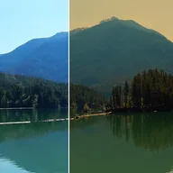

色溫

以開爾文色溫調整圖片冷暖；6500 K不會改變圖片。
讓畫面變得更暖或更冷，彷彿它是被某個色溫（以克耳文為單位）的燈照亮一樣。色溫設為 6500 K 時畫面不變；數值較低會呈現較暖的橘色調，數值較高則呈現較冷的藍色調。強度會將結果與原始畫面混合。
設定
| 設定項目 | 類型 | 範圍 | 預設值 |
|---|---|---|---|
| 色溫 | 數字 | 1000 至 40000 | 3200 |
| 強度 | 數字 | 0 至 1 | 1 |

以開爾文色溫調整圖片冷暖；6500 K不會改變圖片。
讓畫面變得更暖或更冷，彷彿它是被某個色溫（以克耳文為單位）的燈照亮一樣。色溫設為 6500 K 時畫面不變；數值較低會呈現較暖的橘色調，數值較高則呈現較冷的藍色調。強度會將結果與原始畫面混合。
| 設定項目 | 類型 | 範圍 | 預設值 |
|---|---|---|---|
| 色溫 | 數字 | 1000 至 40000 | 3200 |
| 強度 | 數字 | 0 至 1 | 1 |